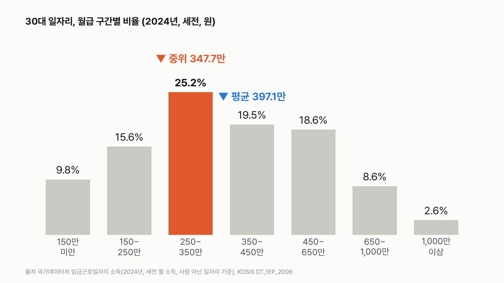

30대 평균 월급 397만 원, 그런데 한가운데는 348만 원
'30대 평균 월급'을 듣고 내 월급이 적다고 느꼈다면, 견줄 숫자는 평균보다 중위값이에요. 30대 일자리의 절반은 347.7만 원보다 적게 받아요.

3줄 요약
- 2024년 30대 일자리의 평균 월급은 397.1만 원, 중위 월급은 347.7만 원이에요. 49.4만 원 차이 나요(세전).
- 중위 월급은 월급 순으로 줄 세웠을 때 한가운데 값이에요. 평균은 월급이 아주 많은 일자리가 끌어올려서 한가운데보다 높아요.
- 30대 일자리 4개 중 1개(25.2%)가 월 250만~350만 원이에요. 가장 많은 구간이에요.
| 30대 일자리 월급(2024년, 세전) | 값 |
|---|---|
| 평균 | 397.1만 원 |
| 중위값(한가운데) | 347.7만 원 |
| 차이 | 49.4만 원 |
| 평균 × 12(연) | 4,765만 원 |
| 중위값 × 12(연) | 4,172만 원 |
평균과 중위값, 한 줄로
100개 일자리를 월급 순서로 줄 세우면 50번째가 중위값이에요. 평균은 100개를 다 더해 100으로 나눈 값이라, 월급이 아주 많은 몇 개가 숫자를 위로 당겨요.
가장 많은 구간: 250만~350만 원
| 월급 구간 | 30대 일자리 비율 |
|---|---|
| 150만 원 미만 | 9.8% |
| 150만~250만 원 | 15.6% |
| 250만~350만 원 | 25.2% |
| 350만~450만 원 | 19.5% |
| 450만~650만 원 | 18.6% |
| 650만~1,000만 원 | 8.6% |
| 1,000만 원 이상 | 2.6% |
350만 원 미만 일자리를 모두 더하면 50.6%예요. 그래서 한가운데 값(347.7만 원)이 250만~350만 원 구간 끝자락에 있어요.
평균 397.1만 원은 그 위 구간(350만~450만 원)에 있어요. 650만 원 이상 일자리 11.2%가 평균을 한가운데보다 위로 당겨요.
8년 새 차이가 더 벌어졌어요
2016년 30대 평균은 302.2만 원, 중위값은 268.9만 원이었어요. 차이는 33.3만 원이었어요.
2024년에는 차이가 49.4만 원이에요. 두 값 모두 올랐고, 평균이 더 많이 올랐어요.
숫자를 다시 보며
여기 숫자는 일자리 하나에서 받은 세전 월급이에요. 두 곳에서 일하는 사람은 일자리 두 개로 따로 세요. 세금과 보험료를 뗀 실제 통장에 들어오는 돈은 이보다 적어요. 여러분 월급은 347.7만 원 줄의 어느 쪽에 있나요?
이 숫자는 어디서 왔나요
출처
기준일 2024년 값이에요(2026년 공표분). 2026년 11월 16일에 받았어요.
| 데이터 | 출처 | 쓰임 |
|---|---|---|
| 임금근로일자리 소득 2016~2024 | 국가데이터처, KOSIS DT_1EP_2006 | 30대 평균·중위 월 소득, 소득 구간별 비율 |
어떻게 셌나요
- 자료: 국가데이터처 「임금근로일자리 소득(보수) 결과」, KOSIS DT_1EP_2006. 2024년 12월 기준 임금근로일자리의 연령대별 월평균 소득과 중위소득, 소득 구간별 비율이에요.
- 세전: 근로소득 신고 금액 기준이라 세금·4대 보험료를 떼기 전이에요.
- 일자리 기준: 사람이 아니라 일자리 하나가 단위예요.
- 연봉: 월 값 × 12로 계산한 값이에요. 공식 표의 연봉이 아니에요.
- 구간 묶기: 공식 표의 10개 구간 가운데 85만 원 미만과 85만~150만 원은 '150만 원 미만'으로, 450만~550만·550만~650만 원은 '450만~650만 원'으로, 650만~800만·800만~1,000만 원은 '650만~1,000만 원'으로 더했어요.
한계 4가지
이 데이터로 말할 수 없는 것
- 사람 기준이 아니에요. 한 사람이 일자리 두 개를 가지면 두 번 세요. 그래서 '30대 한 사람의 월급'과는 달라요.
- 세전 금액이에요. 손에 쥐는 돈은 세금·보험료만큼 적어요.
- 임금근로일자리만 들어 있어요. 자영업자 소득은 빠져 있어요.
- 구간 비율은 반올림 값이라 더하면 100.0%와 조금 다를 수 있어요.
새 글 나오면 받아 보기
피드 리더 앱에 이 사이트 주소를 한 번 넣어 두면, 새 글이 올라올 때 앱에 떠요. 가입이나 메일 주소는 필요 없어요.
받는 법 보기
- 피드 리더 앱을 하나 골라요. 새 글을 모아 보여 주는 앱이에요. 예를 들면 Feedly나 Inoreader가 있어요. 둘 다 무료고 웹·휴대폰에서 써요.
- 앱에서 '구독 추가'(+)를 누르고 아래 주소를 붙여 넣어요.
- 끝이에요. 새 글이 올라오면 앱 목록에 떠요.
https://protofu.github.io/opendata-insight/feed.xmlFeedly를 쓴다면 여기를 눌러 바로 추가할 수도 있어요.